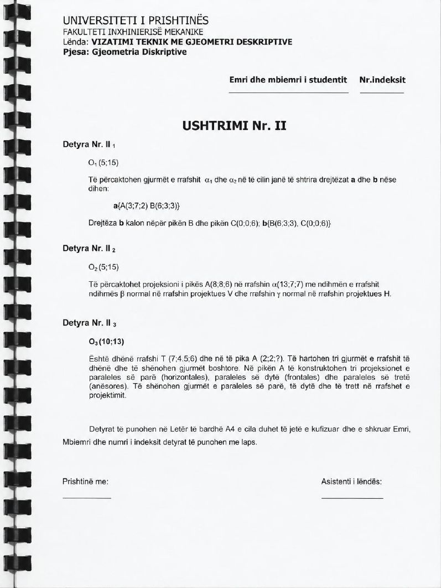
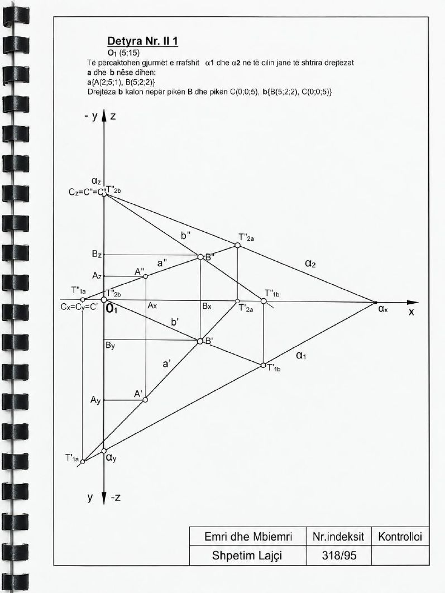

Animacioni vizatimi hap pas hapi, 22 hapa
Hap në dritare të plotë ↗
Në projektor hape në dritare të plotë; tastet ← → ndërrojnë hapin, h hap rrafshet, v ndërron pamjen.
Faqet e librit


Gjurmët e rrafshit α nëpër drejtëzat a dhe b
Të përcaktohen gjurmët α₁ dhe α₂ të rrafshit në të cilin janë të shtrira drejtëzat a dhe b. Drejtëza b kalon nëpër pikën B dhe pikën C.
Të dhënat: O₁ (5; 15); a {A (2; 5; 1), B (5; 2; 2)}, b {B (5; 2; 2), C (0; 0; 5)}
Këto janë të dhënat e zgjidhjes në faqen 7 dhe të animacionit; faqja e ushtrimit (6) jep variantin A (3; 7; 2), B (6; 3; 3), C (0; 0; 6).
Në projektor hape në dritare të plotë; tastet ← → ndërrojnë hapin, h hap rrafshet, v ndërron pamjen.

